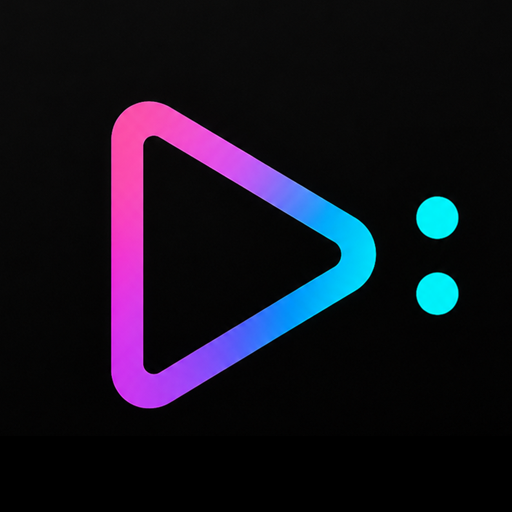
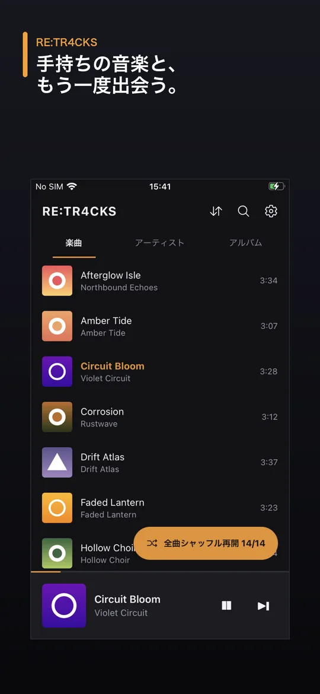
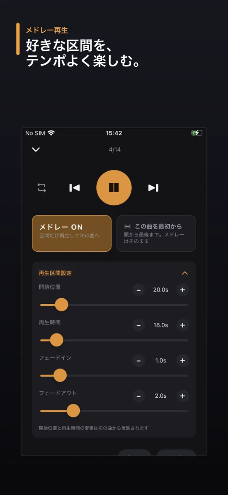
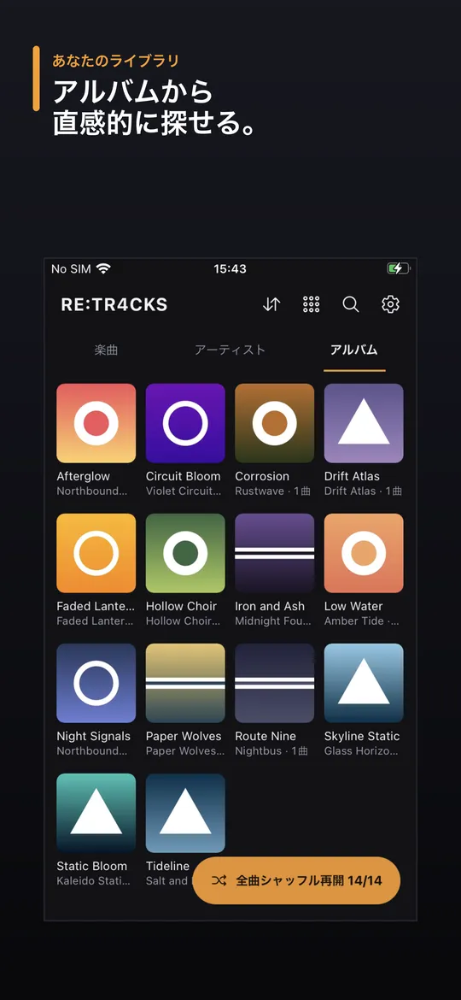

手持ちの音楽を再発見
RE:TR4CKSは、曲の好きな部分を一定時間ずつ次々と再生する「メドレー」機能で、忘れていた音楽との再会を楽しむオフライン音楽プレイヤーです。
- 開始位置・再生時間・フェードイン／フェードアウトを指定できるメドレー再生
- 全曲を聴き終えるまで同じ曲を繰り返さないシャッフル
- 楽曲・アーティスト・アルバムから検索・再生
- バックグラウンド再生とロック画面操作
- 再生中の曲を表示するホーム画面ウィジェット
- 日本語／英語表示
手持ちの音楽と、もう一度出会う。

RE:TR4CKSは、曲の好きな部分を一定時間ずつ次々と再生する「メドレー」機能で、忘れていた音楽との再会を楽しむオフライン音楽プレイヤーです。
音楽や再生状況を端末の外部へ送信することはありません。アカウント登録、アクセス解析、トラッキング、クラウド同期はなく、すべて端末内で動作します。
無料でご利用いただけます（バナー広告表示）。Pro（月額購読）で広告を非表示にできます。


